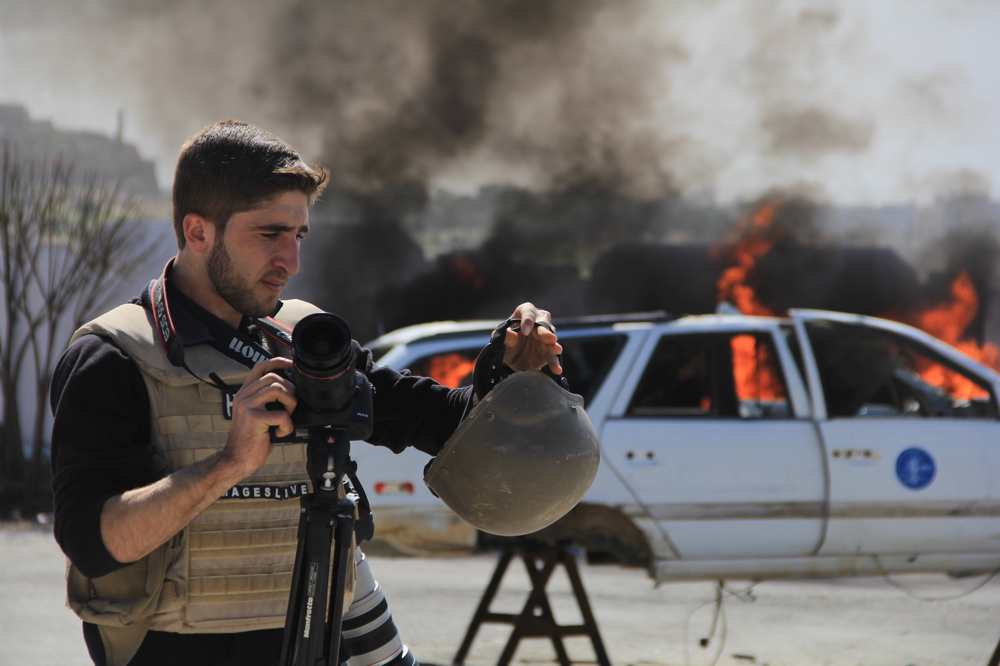
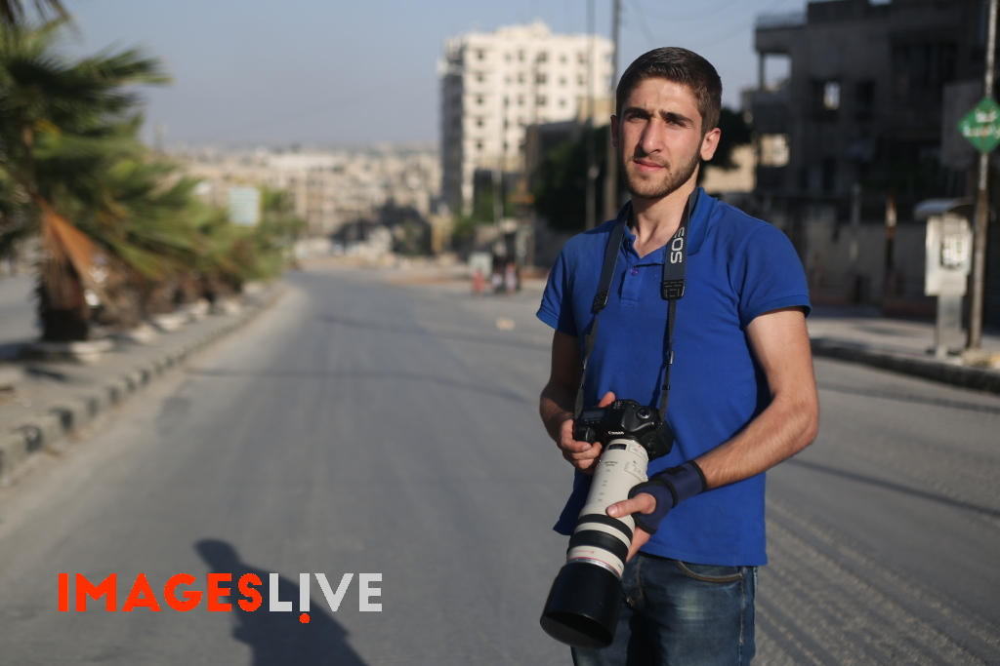
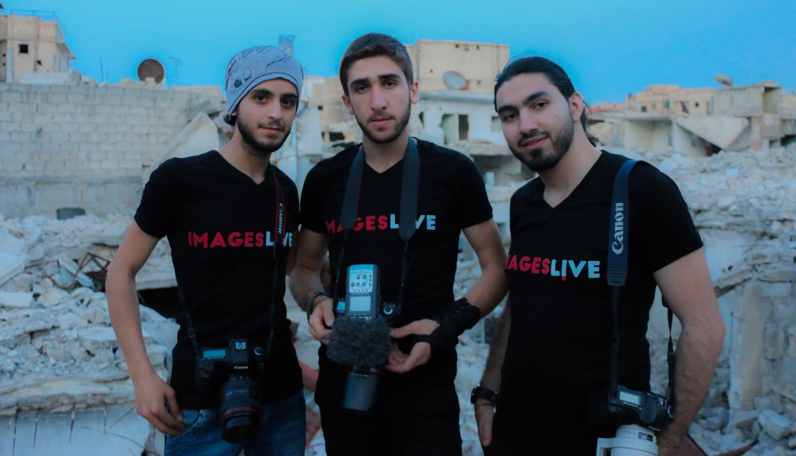
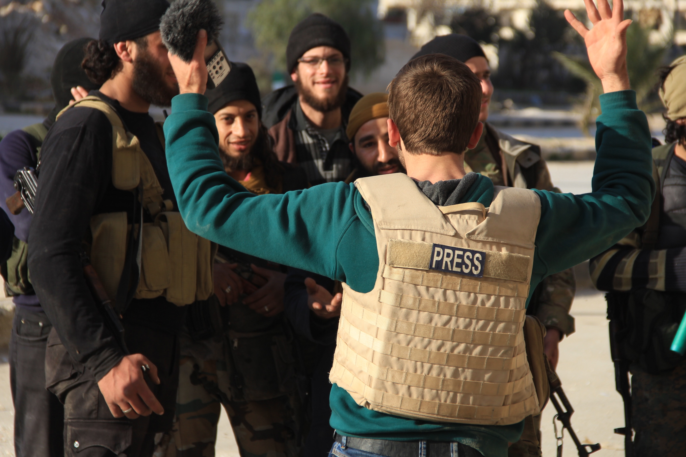
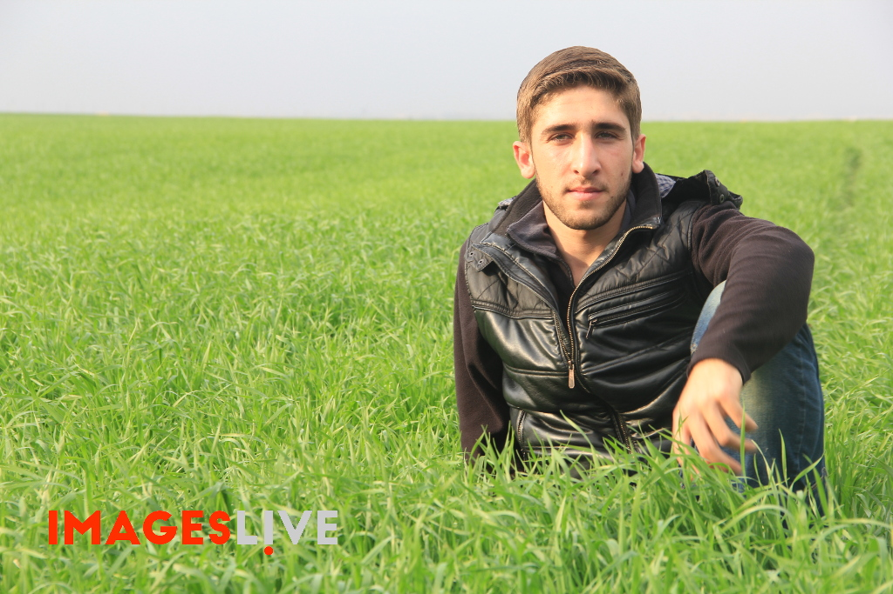

في الخامس من حزيران عام 2016 م , ذبلت زهرة من زهور سوريا .
استشهد الصحفي أسامة جمعة إثر إصابه بشظايا قذيفة أطلقتها مدفعية النظام السوري في حي المشهد في حلب.
وكان أسامة قد ذهب إلى ذلك الحي لتصوير عملية إنقاذ الناس العالقين تحت الأنقاض بعد القصف بالبراميل المتفجرة .

استقل أسامة سيارة الإسعاف المتوجهة لمكان القصف , وبمجرد وصولها استهدفت بالقذائف فأصيب أسامة الذي كان بداخلها , وعندما حاول السائق المسعف عبدالعزيز سرحة إنقاذ أسامة سقطت قذيفة أخرى لتودي بحياتيهما معاً.
الصحفي الشاب النزيه أسامة الذي كان شجاعاً ومستقلاً للغاية كان يتمتع بإنسانية عظيمة وعاطفة عميقة .
فقد أسامة حياته وهو في ربيع العمر في العشرين من عمره , حيث ولد في حلب _ سوريا , سرعان ما غادر رفقة عائلته ووالده الذي كان معلماً في إحدى مدارس المدينة ليسكن في قرية تقاد الواقعة غربي حلب.

تعرف الصحفي مدين ديرية منذ بداية الثورة على عائلة أسامة , التي كانت تستضيفه لفترات طويلة حين ذهابه إلى سوريا لتغطية الأوضاع هناك , حيث كانت عائلةً مضيافة ولطيفة جداً مع مدين .
أسامة منذ صغره كان يبدي أهتماماً وشغفا كبيراً في كميرات مدين , حيث اعرب له عن رغبته في تعلم كيفية استخدامها في الوقت الذي كان فيه مدين مقيم مع عائلته .
تدرب أسامة في تركيا في مجال الصحافة والتصوير وكذلك في إنتاج الأفلام الوثائقية مع وكالة إيمجز لايف.
كما تدرب على الأرض في سوريا من قبل مدين ديرية , الذي كان يركز في تدريبه إلى حد كبير على ضرورة الاستقلال والحيادية والموضوعية بالإضافة إلى سلامة الصحفي أثناء تغطية الأخبار .

كما شدد أيضاً على واجب الصحفيين لإظهار كافة الأطراف المشاركة في الصراع دون تبني أي وجهة نظر معينة .
وكان أسامة مستوعباً مبادئ الصحافة بسهولة بالغة بخلاف العديد من الشبان السوريين الآخرين , لم ينضم أسامة لأي من الفصائل المتحاربة و لا لأي حزب أو منظمة خلال الصراع السوري , وبالتالي المحافظة على نهج غير متحيز للصراع الأمر الذي انعكس في حياديتيه ومهنيتيه العالية كصحفي .
كان حلم أسامة دراسة التصوير الفوتوغرافي وصناعة الأفلام في الجامعات التركية حيث كان يجري اتخاذ الترتيبات اللازمة لذلك.
خلال فترة تدريبه كان التركيز على مسائل السلامة , لقد استشهد أسامة جراء إصابة خطيرة في رأسه وصدره , كما وأصيب أيضاً في ساقه و ذراعه ولم يعرف سبب عدم ارتدائه للخوذة والدرع في سيارة الاسعاف .

وقد أصر أحد أقاربه على استرجاع جثته على الرغم من خطورة المرور بطريق الكاستيلو الذي يتعرض للقصف بنيران المدفعية والغارات الجوية.
وقد سبق ان انجز أسامة عدة تقارير عن طريق الكاستيلو قبل ايام من استشهادة, وبسبب القصف الشديد بالمدفعية الثقيلة والصواريخ الذي شهده الطريق مؤخراً لقب ( الطريق إلى الموت ) .
وللأسف…عبر جثمان أسامة الطاهر من هذا الطريق ليورى الثرى في قريتة التي احبها وصمم ان يعود اليها بعد ان قرر الرجوع الى الوطن الام سوريا رقيقا مثل اوراق الياسمين يحمل هموم واوجاع اهله ومعاناة اطفال بلده التي مزقت اجسادهم طائرات الموت واسلحة الفتك ورصاص القتل ليقف شامخا عاليا الرأس يحدق ينظر بالكاميرا ويرسم كل لحظة تحكي قصص وحكايات الحرب والدمار والخراب وآلام الاطفال وجراح وطن .
رحل عنا أسامة وفقدناه , لحقناه ووجدنا أن الصورة التي نقلها تبقى وتعيش في الوجدان والضمير وتظل ماثلة في العقول والقلوب وشاهدة حقيقية على بشاعة الحرب والقتل ليسقط من بين ضحاياها صحفي مستقل ليس طرفا بها.